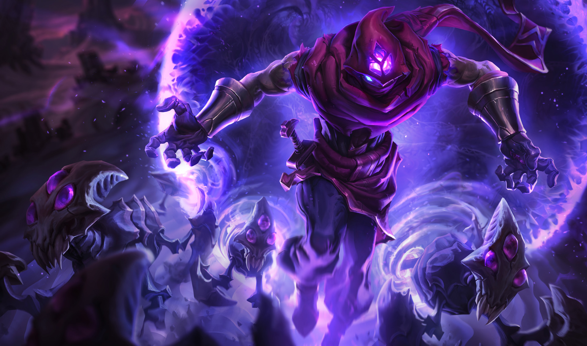

tu devrais essayer Malzahar

malzahar est un mage qui inflige la plupart de ses dégats grâce à son sort de DoT et ses autres sort rentre facilement en synergie avec celui-ci, de plus, il possède un des sorts de contrôles les plus puissants du jeu mais il est très peu mobile et donc très vulnérable.